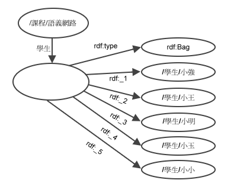
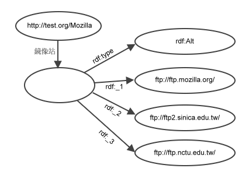
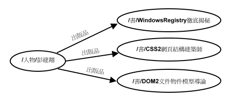
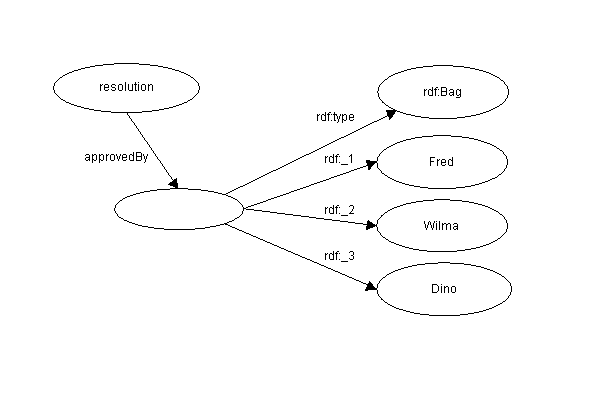

| 上一頁(P) | 上一層(T) | 下一頁(N) |
| 2. 資源描述架構的基本觀念 | 4. 陳述式的陳述式 |
常常會遇到這樣的情況，需參考資源的集合。就像是這些情況，一件工程是由一個人以上完成的、列出某一堂課修課的學生、套件內中的各個軟體模組…等。資源描述架構的容器就是用來處理這些列舉的資源或是列舉的文字。
資源描述架構定義三種容器物件：
注意阿，Bag 及 Sequence 在定義中都已經說得很清礎了，可以允許完全相同的值。資源描述架構本身並沒有定義集合這種核心概念，而是以 Bag 有著不同的值來表示，因為資源描述架構核心並沒有制定一個強制的機制如果違反這種限制。未來在資源描述架構核心之上的層級可能會定義這樣的功能。
如果要表示資源的集合，資源描述架構使用一個額外的資源以識別特定的集合(以物件模型的術語來說，是一個集合的實例)。必需宣告這個資源，讓這個資源對為定義在上方三種容器物件型態之一。而之後會加以定義的 type 屬性，是用來產生這種資源的宣告。 The membership relation between this container resource and the resources that belong in the collection is defined by a set of properties defined expressly for this purpose. These membership properties are named simply "_1", "_2", "_3", etc. Container resources may have other properties in addition to the membership properties and the type property. Any such additional statements describe the container; see Section 3.3, Distributive Referents, for discussion of statements about each of the members themselves.
容器最常見的用法是做為屬性的屬性值。當使用這種方法，陳述式仍然有個單一陳述式賓語，而不管容器有幾個成員，容器資源本身即為陳述式的賓語。
例如，要描述句子
修語義網路這門課的學生有小強、小王、小明、小玉、小小。
RDF 模型是
完整說明
圖4：簡單的 Bag 容器
Bag 容器和有著相同型態的重覆屬性是不相同的，請看3.5節中會討論不同之處。 作者將需要一個一個決定，是重覆屬性比較適合使用呢？還是 Bag 比較適合使用呢？
句子
Mozilla 瀏覽器可在 ftp://ftp.mozilla.org/、ftp://ftp2.sinica.edu.tw/、ftp://ftp.nctu.edu.tw/找到。
資源描述架構的模型是
完整說明
圖5：簡單的 Alternative 容器
Alternative 容器常常用於連接語言標記。某個工程的名稱已經轉成好幾種語言，可能有自己的 Title 屬性以指到同一個 Alt 容器，以處理每個語言變數。
RDF 容器語法有下列的形式：
[18] container ::= sequence | bag | alternative [19] sequence ::= '<rdf:Seq' idAttr? '>' member* '</rdf:Seq>' [20] bag ::= '<rdf:Bag' idAttr? '>' member* '</rdf:Bag>' [21] alternative ::= '<rdf:Alt' idAttr? '>' member+ '</rdf:Alt>' [22] member ::= referencedItem | inlineItem [23] referencedItem ::= '<rdf:li' resourceAttr '/>' [24] inlineItem ::= '<rdf:li>' value '</rdf:li>'
Containers may be used everywhere a Description is permitted:
[1a] RDF ::= '<rdf:RDF>' obj* '</rdf:RDF>' [8a] value ::= obj | string [25] obj ::= description | container
Note that RDF/XML uses li as a convenience element to avoid having to explicitly number each member. The li element assigns the properties _1, _2, and so on as necessary. The element name li was chosen to be mnemonic with the term "list item" from HTML.
這份文件要求 Alt 容器至少有一個成員。這個成員會由屬性_1 識別，並且這個成員會成為預設值或偏好值。
注意阿：詞彙描述規格書[詞彙描述]也定義一種機制，可為這些容器型態宣告額外的子類別 , in which case production [18] is extended to include the names of those declared subclasses. There is also a syntax for writing literal values in attribute form; see the full grammar in Section 6.
對於下列這個例句：
修語義網路這門課的學生有小強、小王、小明、小玉、小小。
以資源描述架構/延伸標記語言格式寫成的模型如下：
<rdf:RDF>
<rdf:Description about="http://mycollege.edu/課程/語義網路">
<s:學生>
<rdf:Bag>
<rdf:li resource="http://mycollege.edu/學生/小強"/>
<rdf:li resource="http://mycollege.edu/學生/小王"/>
<rdf:li resource="http://mycollege.edu/學生/小明"/>
<rdf:li resource="http://mycollege.edu/學生/小玉"/>
<rdf:li resource="http://mycollege.edu/學生/小小"/>
</rdf:Bag>
</s:學生>
</rdf:Description>
</rdf:RDF>
這個範例中，由於"學生"屬性的屬性值表示成一個 Bag，對於每個以統一資源識別符號所很示的每個學生，前後順序並不是那麼地重要。
對於下列這個例句：
Mozilla 瀏覽器可在 ftp://ftp.mozilla.org/、ftp://ftp2.sinica.edu.tw/、ftp://ftp.nctu.edu.tw/找到。
以資源描述架構/延伸標記語言格式寫成的模型如下：
<rdf:RDF>
<rdf:Description about="http://test.org/Mozilla">
<s:鏡像站>
<rdf:Alt>
<rdf:li resource="ftp://ftp.mozilla.org/"/>
<rdf:li resource="ftp://ftp2.sinica.edu.tw/"/>
<rdf:li resource="ftp://ftp.nctu.edu.tw/"/>
</rdf:Alt>
</s:鏡像站>
</rdf:Description>
</rdf:RDF>
在"鏡像站"元素中，陳述式內，任何項目之一的值都是可接受的值，所以說不用管其它的項目。
對於陳述式來說，容器的結構產生了一個問題。當陳述式是由集合產生時，陳述式到底在描述什麼呢？或是說，陳述式參考到個賓語呢？是陳述式描述容器本身還是描述容器的成員呢？在資源描述架構中，要描述的(也就是延伸標記語言的語法中，由 about 屬性指示的)賓語稱為指示元件。
下列的例子：
<rdf:Bag ID="pages"> <rdf:li resource="http://foo.org/foo.html"/> <rdf:li resource="http://bar.org/bar.html"/> </rdf:Bag> <rdf:Description about="#pages"> <s:建立者>奧爾‧拉斯萊</s:建立者> </rdf:Description>
這意思是奧爾‧拉斯萊是 Bag 容器 pages 的建立者，而不是只說 Bag 容器內的成員(各個獨立的網頁)的建立者是奧爾‧拉斯萊。Description 的指示元件是容器(Bag)，而不是成員。這有點像是取代容器本身，包含的賓語以個別地方式產生陳述式。為了傳達 Ora Lassila 是這些網頁的建立者，還有另外一種不同的指示元件，會 distribute 容器的成員。在資源描述架構中，這種指示元件是使用 aboutEach 屬性表示的：
[3a] idAboutAttr ::= idAttr | aboutAttr | aboutEachAttr [26] aboutEachAttr ::= 'aboutEach="' URI-reference '"'
如同這個範例，假設我們寫成
<rdf:Description aboutEach="#pages"> <s:建立者>奧爾‧拉斯萊</s:建立者> </rdf:Description>
我們會取得想要的意義。我們把新的指示元件型態稱為分散指示元件。分散指示元件允許我們在資源描述架構的 Description 元素內，共享結構。例如，當好幾個 Description 元素中陳述式有一些些共同的部份(述語及賓語)，而共同的部份可分享於所有 Description 元素之間，可能產生空間的節省及更方便操作中繼資料。而 aboutEach 屬性的屬性值必需是一個容器。在容器內使用分散指示元件就如同分別的成員產生所有的陳述式。
並沒有明確定義分散指示元件的圖形表示法，而是就陳述式的產生而論。分散指示元件擴充屬於個別容器成員的成個別陳述式(實作可自由保留分散指示元件的資訊，像是為了節省儲存空間，就好像任何查詢功能好像是個別產生陳述式一樣)。因此對於資源 foo 及 bar來說，上面的例子等於：
<rdf:Description about="http://foo.org/foo.html"> <s:建立者>奧爾‧拉斯萊</s:建立者> </rdf:Description> <rdf:Description about="http://bar.org/bar.html"> <s:建立者>奧爾‧拉斯萊</s:建立者> </rdf:Description>
一種最常使用中繼資料的方法是產生關於"我網站中所有網頁"的陳述式，或是"我網站中一個分支下的所有網頁"的陳述式。但在許多情況下是不實際的，即使想要明確地列出每個這樣的資源並且識別這個資源為一個容器的成員。資源描述架構因此有了第二個分散指示元件型態，這是個簡短的語法以表示 Bag 的實例，而這個實例的成員是由所有的資源定義的，而資源是由特定的字串識別的：
[26a] aboutEachAttr ::= 'aboutEach="' URI-reference '"'
| 'aboutEachPrefix="' string '"'
The aboutEachPrefix attribute declares that there is a Bag whose members are all the resources whose fully resolved resource identifiers begin with the character string given as the value of the attribute. The statements in a Description that has the aboutEachPrefix attribute apply individually to each of the members of this Bag.
例如，有兩個資源 http://foo.org/doc/page1 及 http://foo.org/doc/page2，我們假設這兩個資源都有一個著作權屬性 Copyright，這可以寫成下列的形式：
<rdf:Description aboutEachPrefix="http://foo.org/doc"> <s:著作權>XXX組織 ©2002年</s:著作權> </rdf:Description>
如果只有這兩個資源，而它們的統一資源識別符號是以 http://foo.org/doc 起始的話，那麼會等同於這種寫法：
<rdf:Description about="http://foo.org/doc/page1"> <s:著作權>XXX組織 ©2002年</s:著作權> </rdf:Description> <rdf:Description about="http://foo.org/doc/page2"> <s:著作權>XXX組織 ©2002年</s:著作權> </rdf:Description>
或是這種寫法：
<rdf:Description aboutEach="#docpages"> <s:著作權>XXX組織 ©2002年</s:著作權> </rdf:Description> <rdf:Bag ID="docpages"> <rdf:li resource="http://foo.org/doc/page1"/> <rdf:li resource="http://foo.org/doc/page2"/> </rdf:Bag>
資源可能有著多個具有相同述語的陳述式(像是使用同樣的屬性)。這不同於單一陳述式的賓語是個包含多個成員的容器。 The choice of which to use in any particular circumstance is in part made by the person who designs the schema and in part made by the person who writes the specific RDF statements.
有裡有一個例子，請考慮作者及她的出版品之間的關係：
彭建翔寫了三本書Windows Registry 徹底揭祕、CSS2網頁結構建築師、DOM2文件物件模型導論。
也就是說，有三個分別不相干的資源由同一位作者撰寫。
完整說明
圖6：重覆的特性
在這個範例中，出版品之間本無任何關連，只是因為這些出版品是由同一位作者撰寫的。
另外這句子：
The committee of Fred, Wilma, and Dino approved the resolution.
是說三個委員以某種方式進行投票，但不需要聲明委員會的成員會投那個票。這會修正這句子的模型成為三個分開的 approvedBy 陳述式，一個陳述式對應一位委員。這會說明每位委員投票的情形。 Rather, it is better to model this as a single approvedBy statement whose object is a Bag containing the committee members' identities:
完整說明
圖7：Using Bag to indicate a collective opinion
The choice of which representation to use, Bag or repeated property, is made by the person creating the metadata after considering the schema. If, for example, in the publications example above we wished to say that those were the complete set of publications then the schema might include a property called publications for that purpose. The value of the publications property would be a Bag listing all of Sue's works.